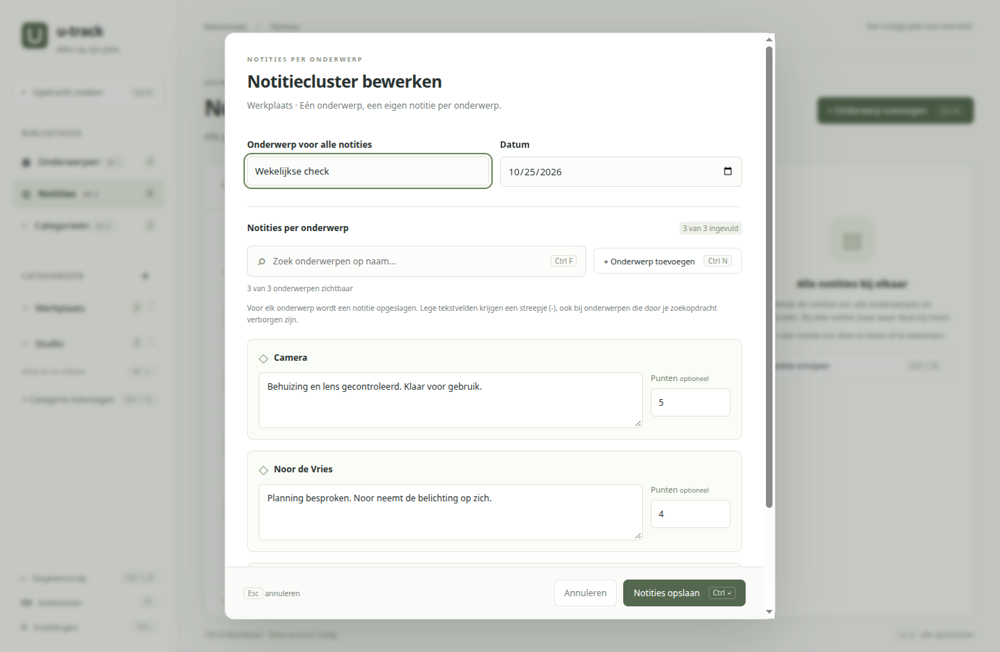
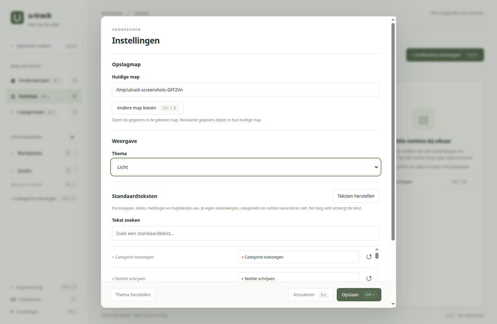

Jouw onderwerpen. Jouw overzicht.
Alles bij elkaar.
Op jouw computer.
Geef personen en spullen een plek in categorieën. Schrijf notities, houd punten bij en vind terug wat je nodig hebt. Rustig, overzichtelijk en lokaal.
Elk onderwerp een plek
Een persoon, een camera of een project. Voeg onderwerpen toe aan meerdere categorieën en houd alles bij elkaar.
Notities die samen horen
Schrijf per onderwerp of voor een hele categorie tegelijk. Open een cluster en werk alle notities in één formulier bij.
Snel weer gevonden
Doorzoek namen en notitie-inhoud. Werk met de muis of gebruik de sneltoetsen die bij de knoppen staan.
Rust in je werk.
Ruimte voor jouw voorkeur.
Losse notities blijven losse bestanden. De app brengt ze bij elkaar en past zich aan jouw manier van werken aan.

Samen bijwerken, apart bewaren.
Eén ronde notities voor alle onderwerpen in een categorie. Met tekst en optionele punten per onderwerp, opgeslagen als afzonderlijke Markdown-bestanden.

Maak het jouw werkplek.
Kies licht, donker of eigen kleuren. Pas standaardteksten aan en kies zelf waar je gegevens worden opgeslagen.
In drie stappen aan de slag.
Electron is inbegrepen. Je hoeft voor de geïnstalleerde app geen Node.js of npm te installeren.
Download het installatiebestand
Download u-track 1.0.0 voor Ubuntu / Debian en bewaar het bestand op je computer.
Open het .deb-bestand
Open het met je pakketinstallatieprogramma en kies Installeren. Je systeem kan om je wachtwoord vragen.
Start u-track
Open de app via het applicatiemenu. Maak een categorie aan, voeg onderwerpen toe en schrijf je eerste notitie.
Liever installeren via de terminal?
sudo apt install ./u-track_1.0.0_amd64.debVoer dit uit in de map waarin je het bestand hebt opgeslagen. Meer uitleg vind je in de handleiding. Wil je zelf aan de app werken? Bekijk de README van de broncode.
Je gegevens staan standaard in je Documenten-map onder u-track, als CSV en Markdown. De app is nog in ontwikkeling. Maak een back-up van je gegevens voordat je een nieuwe versie installeert.
Een rustige plek voor overzicht.
Lokaal opgeslagen. Doorzoekbaar. Op jouw manier.